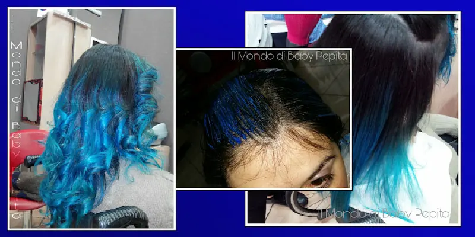
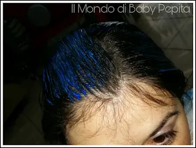
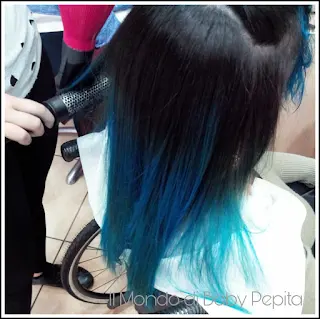
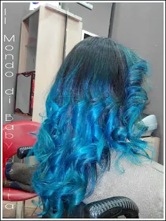

Ho rifatto il colore ai capelli. Sono un puffo

Hola. .Ho rifatto il colore ai capelli. . sì, l'ho rifatto! Stavolta tutto un solo colore, non ho voluto fare un multicolore come la volta precedente...

Ho voluto fare tutto BLU.....
Un Blu turchese - cobalto.

Ho tenuto il colore più tempo in testa perché altrimenti non prendeva e quindi più di mezz'ora, visto che la decolorazione già l'avevo fatta. .Et voilà!
La mia amica ha detto che sembro Sailor Mercury :D Beh un pò puffa, un pò eroina ma mi piace tanto questo colore strambo.

Datemi un giudizio.. Voi lo fareste mai un colore eccentrico come me?
Quale fareste?
Vi dedico una frase che ho letto una volta:
I capelli sono barometro di salute, trasmettitori di energia, come ali dispiegate verso il cosmo sono il tramite tra interno ed esterno, antenne sottili al servizio della percezione, perché negarsela coprendola con le tinte?
(Luisa Pronzato)
Non credo bisogna dire di più. Cambiare look mette buon'umore senza dubbio, infatti, io inizio quasi sempre dai miei capelli quando voglio darmi una marcia in più.